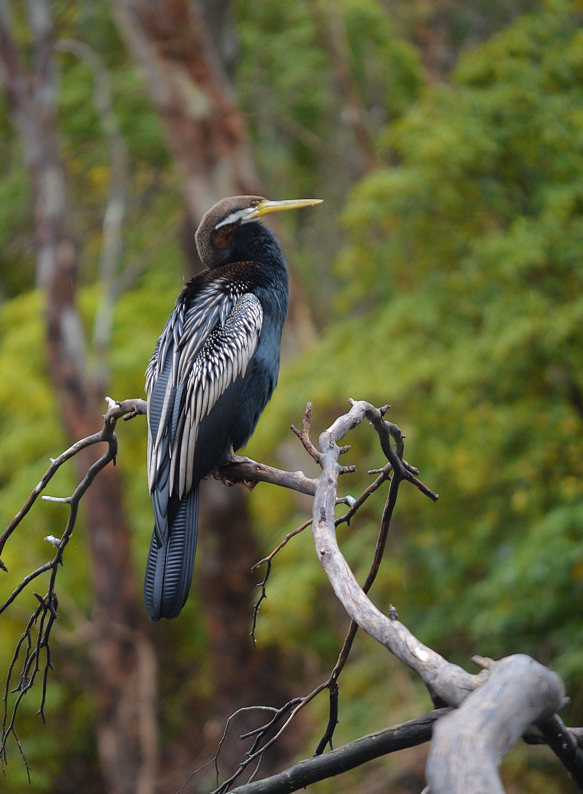

The Australian Darter is a long-necked waterbird that is exceptionally well adapted to hunting underwater. Its narrow body, long neck and pointed bill give it a snake-like appearance when only its neck and head are visible above the surface, which has earned it the nickname 'snakebird'. It swims with much of its body submerged and pursues fish underwater before spearing them with its sharp bill. After swimming, it often spreads its wings to dry its plumage because its feathers are less waterproof than those of many ducks. Australian Darters are commonly seen around freshwater wetlands, rivers, lakes and sheltered coastal waters.